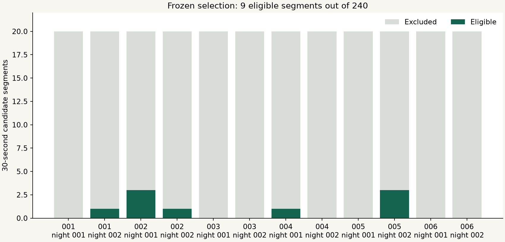

Research Notes · Experiment 009
A pretrained view.
An input bottleneck.
An LLM’s interpretation of your brainwaves · Open methods research
A pinned pretrained CodeBrain encoder completed 45 forward passes: 9 original segments and four waveform controls for each. Only 9 of 240 candidate 30-second segments passed the frozen quality rules (3.75%); this is 4.5 minutes from two selected hours.
The planned participant-level test cannot be estimated. No participant has the required three eligible segments in both nights; the protocol requires at least three such participants. All six primary comparisons report INSUFFICIENT_PARTICIPANTS. There is no population agreement estimate or p value from this run.
Every candidate stays visible
We fixed the first ten minutes of each of twelve previously exposed EESM23 recordings before inspecting encoder outputs. All 240 candidates remain in the ledger. Rejection reasons overlap; their counts must not be added to obtain the number of rejected segments. The initial ten minutes are not representative of whole nights and may include setup or calibration. No later segment replaced an excluded one.

| Source participant | Night | Eligible blocks | Candidate blocks |
|---|---|---|---|
| 001 | 001 | 0 | 20 |
| 001 | 002 | 1 | 20 |
| 002 | 001 | 3 | 20 |
| 002 | 002 | 1 | 20 |
| 003 | 001 | 0 | 20 |
| 003 | 002 | 0 | 20 |
| 004 | 001 | 1 | 20 |
| 004 | 002 | 0 | 20 |
| 005 | 001 | 0 | 20 |
| 005 | 002 | 3 | 20 |
| 006 | 001 | 0 | 20 |
| 006 | 002 | 0 | 20 |
| Rejection reason | Candidate blocks |
|---|---|
| BASELINE_QC | 171 |
| nonfinite native samples | 70 |
| preprocessed absolute amplitude exceeds 100 uV | 160 |
Six planned comparisons
| Comparison | View | Valid blocks | Complete participants | Outcome | Adjusted p |
|---|---|---|---|---|---|
| geometry | Waveform shape | 9 | 0 | INSUFFICIENT_PARTICIPANTS | Not estimated |
| geometry | Spectrum | 9 | 0 | INSUFFICIENT_PARTICIPANTS | Not estimated |
| geometry | Sensor coordination | 9 | 0 | INSUFFICIENT_PARTICIPANTS | Not estimated |
| change | Waveform shape | 9 | 0 | INSUFFICIENT_PARTICIPANTS | Not estimated |
| change | Spectrum | 9 | 0 | INSUFFICIENT_PARTICIPANTS | Not estimated |
| change | Sensor coordination | 9 | 0 | INSUFFICIENT_PARTICIPANTS | Not estimated |
For each segment, we average embeddings across four channels and retain 28 one-second patch centers. Geometry means the rank correlation between all pairwise encoder cosine distances and the corresponding frozen numerical descriptor distances. Change means the rank correlation of 27 adjacent-step distances. These are continuous change magnitudes, not diagnosed states, matched inflection events or discrete token IDs. A high segment correlation may reflect common filtering, oscillations or artifacts.
The nine segment observations
Descriptive rank correlations, with source grouping retained. These rows do not establish participant-level agreement.
| Candidate | Person / night | Start (s) | Shape geometry | Spectrum geometry | Coordination geometry | Shape change | Spectrum change | Coordination change |
|---|---|---|---|---|---|---|---|---|
| 26 | 001 / 002 | 180 | -0.047 | 0.158 | -0.187 | -0.081 | 0.099 | -0.293 |
| 41 | 002 / 001 | 30 | 0.115 | 0.125 | 0.059 | 0.077 | -0.022 | -0.016 |
| 42 | 002 / 001 | 60 | 0.460 | 0.190 | 0.042 | 0.224 | -0.075 | -0.099 |
| 53 | 002 / 001 | 390 | 0.198 | 0.232 | 0.029 | 0.049 | 0.183 | -0.286 |
| 64 | 002 / 002 | 120 | 0.065 | 0.113 | -0.073 | 0.071 | 0.357 | 0.055 |
| 127 | 004 / 001 | 210 | 0.316 | 0.410 | 0.122 | 0.153 | 0.135 | -0.311 |
| 184 | 005 / 002 | 120 | 0.165 | 0.202 | 0.262 | 0.214 | 0.270 | 0.197 |
| 198 | 005 / 002 | 540 | 0.345 | 0.191 | 0.030 | -0.120 | -0.193 | 0.176 |
| 199 | 005 / 002 | 570 | 0.302 | 0.102 | 0.035 | -0.369 | -0.142 | -0.116 |
Wave-only input
The encoder receives only finite numeric wave arrays: four in-ear channels, 30 seconds, resampled from 250 to 200 Hz and scaled from microvolts by dividing by 100. The fixed preprocessing uses a 0.3–75 Hz bandpass and 60 Hz notch. The source metadata reports 50 Hz mains; this model-recipe notch does not specifically remove that component. Every filter, validity rule and transformation is in the protocol. No identity, demographics, sleep-stage or task label enters preprocessing or inference; anonymous source keys are used afterward for evaluation.
The representation
This runs the published CodeBrain EEGSSM backbone with fixed weights; it does not run the full discrete dual tokenizer or an LLM decoder. The authors trained on 19 scalp channels. Accepting four ear channels computationally does not validate their spatial meaning. Pretraining overlap is unknown. The only source portability edits move an attention mask to the input device and use a relative import; the adapter restores the batch axis. Every checkpoint key is loaded strictly with safe weights-only loading.
Waveform controls
Every eligible segment is also run at half amplitude, with polarity reversed, with channel positions reversed, and with independent Fourier-phase randomization per channel. These are matched waveform probes. The JSON retains all 36 control comparisons, including undefined values and amplitude excursions. Participant-balanced control summaries are also unavailable because no person meets the two-night rule. We do not promote pooled segment summaries to a participant result.
What follows
This experiment establishes a reproducible CPU execution path and exposes a sampling/compatibility bottleneck. It does not establish universal geometry, semantic meaning, clinical diagnostic accuracy or physical Neurable transfer. The next comparison should preregister a time-distributed sample within the already exposed recordings, audit amplitude and missing-data eligibility without inspecting encoder agreement, and require enough complete participants before inference. Untouched people and later sessions remain reserved. A second independently trained encoder and cycle/burst-level controls follow after that input problem is resolved.
Reproduce and inspect
Full Research Note and sources · All numerical results · Versioned data, source and checksums